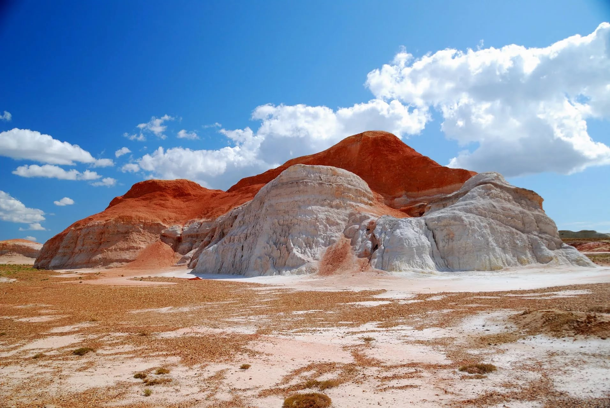

Киин-Кериш Урочище

Описание
Урочище Киин-Кериш - это вскрытые эрозией отложения пестроцветных, преимущественно красных, глин. Город духов - так называют это место с неземными, марсианскими пейзажами. Размытые водой и ветром глины образуют здесь очень яркий, причудливый ландшафт. Слоеный третичными глинами невообразимый по красоте и оригинальности уголок с неповторимыми красными, белыми и оранжевыми сооружениями. Издали красные глинистые утесы и обрывы Киин-Кериша похожи на рвущееся на ветру пламя. За это их называют «Пылающие утесы». Они находятся в Курчумском районе ВКО. Найти Киин-Кириш без проводника сложно, поскольку никаких указателей нет, а сам он расположен как бы в низине, в некоей воронке, будто в кратере вулкана.
Особенности
- Уникальные петроглифы
- Природная красота
- Историческое значение